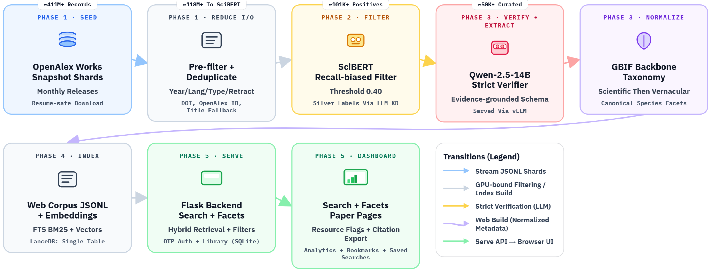
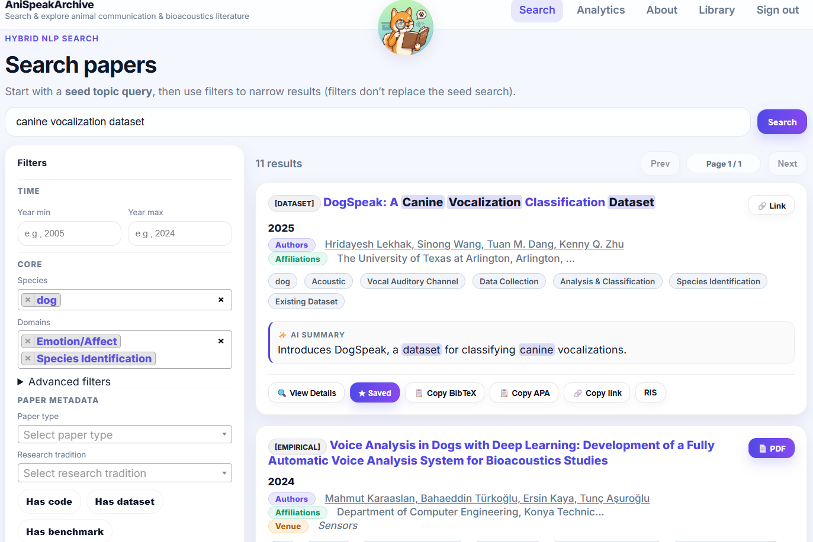

Project Summary
AniSpeakArchive is a production-oriented bioacoustics literature system that turns raw scholarly metadata into searchable, retrieval-grounded research support.
The project repository is private while the work is under review at the AAAI Demo Track.
- Two-stage relevance filter using SciBERT screening followed by Qwen-based metadata enrichment.
- Fine-tuned domain filtering workflow for reducing corpus noise before indexing.
- Taxonomy normalization to keep species and domain labels consistent across records.
- Hybrid retrieval stack combining BM25, dense embeddings, and reranking.
- LLM-backed metadata/response components served through vLLM for practical inference throughput.
1. Pipeline Source Document
Figure F: Pipeline figure extracted from pipeline.pdf

2. Retrieval Mechanics
Figure D: Retrieval decision flow
Flow reflects implementation structure: lexical and dense retrieval are fused, then reranked for final ordering.
3. Evaluation Reality Check
Current evaluation status
- Metrics implemented: Accuracy, Precision, Recall, F1, AUROC.
- Known constraint: no benchmark artifact committed in this portfolio repo.
- Data/model availability and GPU environment affect reproducibility.
4. Product Experience Figure
Figure B: Search interface used by researchers
